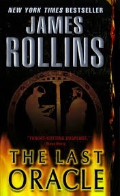

|
|  |
The Last Oracle
|
James Rollins
|
 |
Fiction, Action & Adventure, Military, Science Fiction
|
HarperAudio
|
What if you could bioengineer the next great world prophet: scientifically produce the next Buddha, the next Muhammad, or the next Jesus? Would it mark the Second Coming or initiate a chain reaction with disastrous consequences?
A master at combining historical and religious intrigue with edge-of-your-seat adventure, "New York Times" bestselling author James Rollins brings back SIGMA Force to battle a group of rogue scientists who've unleashed a bioengineering project that could bring about the extinction of humankind.
In Washington, D.C., a homeless man dies in Commander Gray Pierce's arms, shot by an assassin's bullet. But the death leaves behind a greater mystery: a bloody coin found clutched in the dead man's hand, an ancient relic that can be traced back to the Greek Oracle of Delphi. As ruthless hunters search for the stolen artifact, Gray Pierce discovers that the coin is the key to unlocking a plot that dates back to the Cold War and threatens the very foundation of humanity.
An international think tank of scientists known as the Jasons has discovered a way to bioengineer autistic children who show savant talents—mathematical geniuses, statistical masterminds, brilliant conceptual artists—into something far greater and far more "frightening", in hopes of creating a world prophet for the new millennium, one to be manipulated to create a new era of global peace . . . a peace on their own terms.
Halfway around the world, a man wakes up in a hospital bed with no memory of who he is, knowing only that he's a prisoner in a subterranean research facility. With the help of three unusual children, he makes his escape across a mountainous and radioactive countryside, pursued by savage hunters bred in the same laboratory. But his goal is not escape, nor even survival. In order to thwart a plot to wipe out a quarter of the world's population, he must sacrifice all, even the children who rescued him.
From ancient Greek temples to glittering mausoleums, from the slums of India to the toxic ruins of Russia, two men must race against time to solve a mystery that dates back to the first famous oracle of history—the Greek Oracle of Delphi.
But one question remains: "Will the past be enough to save the future?"
|
|
|
|